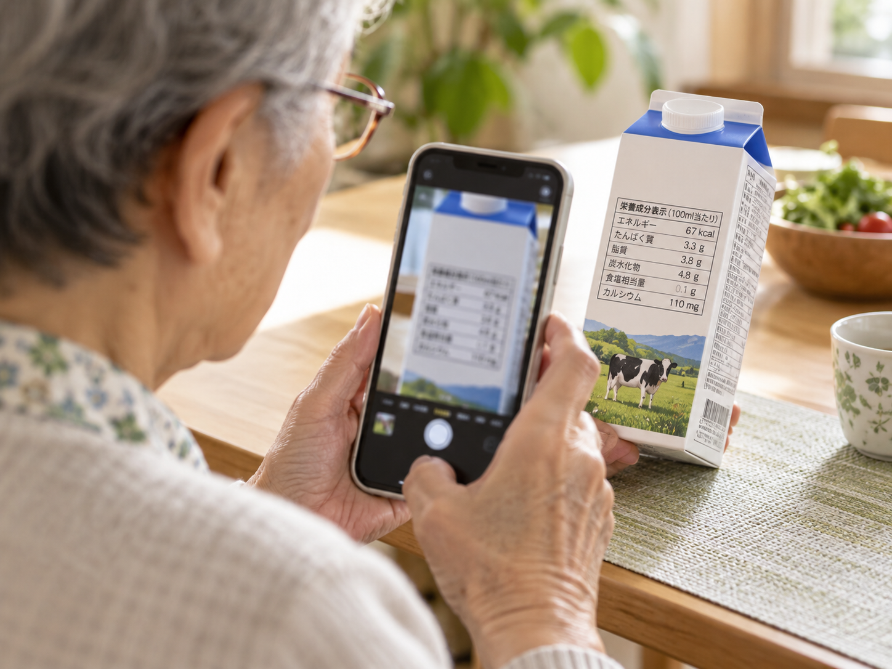
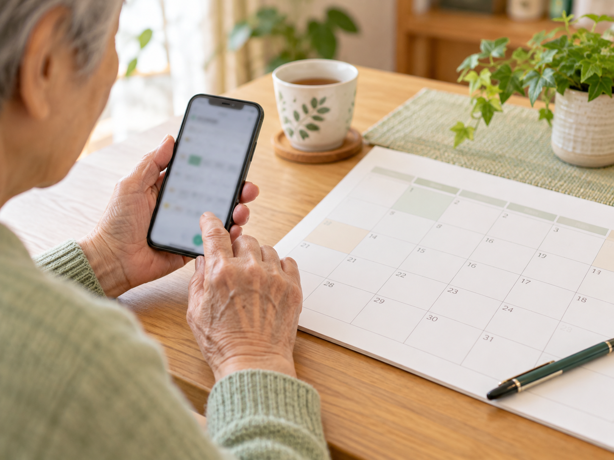

話しかける。見せる。相談する。
2026年10月27日（火）19:00〜20:30講師 ENTOKYO株式会社 裴 尚峰
文字で聞く。声で話す。写真を見せることも。
「むずかしい言葉は使わず、ゆっくり説明して」
何度でも聞き直せます。
カメラで見せながら相談。予定を入れるお手伝いも。
使える機能は、アプリや設定によって異なります。

AIは間違えることもあります。大切な内容は確認しましょう。
「この食事は何キロカロリー？量は、ご飯150グラムです」
量や材料を伝えると、考える手がかりが増えます。
写真だけでは正確に測れません。食事制限がある方は医師・管理栄養士に相談を。
「この食品の栄養表示を、わかりやすく説明して」
文字を読む、内容を整理するお手伝いに。
病気の診断や、血圧などの測定はできません。体調の異変は医療機関へ。個人情報は映さないようにしましょう。
「11月2日、午前10時に通院。1時間前に知らせて」
登録後は、日付・時間・通知を確認。

カレンダー連携と通知の設定が必要です。対応するアプリで実演します。
毎日の歩数を、自動で記録。体重や血圧も記録できます。
北区のウォーキングコースも楽しめます。
北区の公式案内を見る ↗
「もう一度見せて」でも大丈夫。一緒に、ゆっくり確かめましょう。
今日の中から、ひとつ試してみましょう。